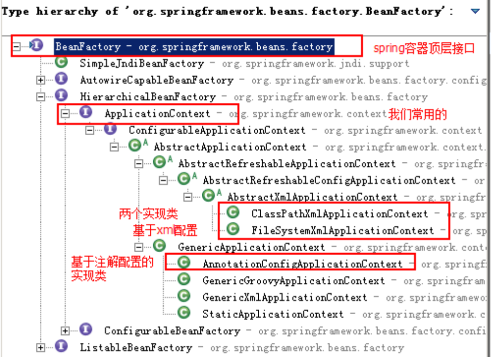
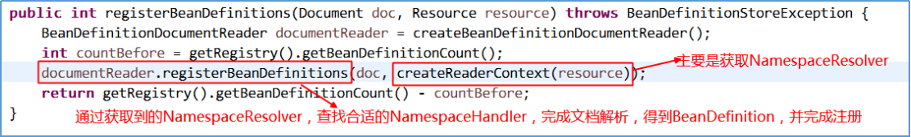

原文连接:https://www.cnblogs.com/chenyanbin/p/11756034.html
Spring介绍
什么是Spring？
百度百科的介绍
Spring官方网址： http://spring.io/
我们经常说的Spring其实指的是 Spring Framework (Spring 框架)
为什么学习Spring？
好处
耦合和内聚介绍
耦合性(Coupling)，也叫耦合度，是对模块间关联程度的度量。
在软件工程中，耦合指的就是对象之间的依赖性。对象之间的耦合越高，维护成本越高。因此对象的设计应使类与架构之间的耦合最小。软件设计中通常用耦合度和内聚度作为衡量模块独立程度的标准。划分模块的一个准则就是高内聚低耦合。
内聚标志一个模块内各个元素彼此结合的紧密程度，它是信息隐蔽和局部化概念的自然扩展。内聚是从功能角度来度量模块内的联系，一个好的内聚模块应当适当做一件好事。
内聚和耦合是密切相关的，同其他模块存在高耦合的模块意味着低内聚，而高内聚的模块意味着该模块同其他模块之间是低耦合。在进行软件设计时，应力争做到高内聚，低耦合。
Spring体系结构
Spring核心概念介绍
IoC(核心中的核心)：Inverse of Control，控制反转。对象的创建权力由程序反转给Spring框架。
AOP：Aspect Oriented Programming，面向切面编程。在不修改目标对象的源代码情况下，增强IoC容器中Bean的功能。
DI：Dependency Injection，依赖注入。在Spring框架负责创建Bean对象时，动态的将依赖对象注入到Bean组件中！！
Spring容器：指的就是IoC容器。
Spring IoC原理分析
什么是IoC容器？
所谓的IoC容器就是指的是Spring中Bean工厂里面的Map存储结构(存储了Bean的实例)。
Spring框架中的工厂有哪些？
ApplicationContext接口()
实现了BeanFactory接口
实现ApplicationContext接口的工厂，可以获取到容器中具体的Bean对象
BeanFactory工厂(是Spring架构早期的创建Bean对象的工厂接口)
实现BeanFactory接口的工厂也可以获取到Bean对象
其实通过源码分析，不管是BeanFactory还是ApplicationContext，其实最终的底层BeanFactory都是DefaultListableBeanFactory
ApplicationContext和BeanFactory的区别？
创建Bean对象的时机不同：
BeanFactory采取延迟加载，第一次getBean时才会初始化Bean。
ApplicationContext是加载完applicationContext.xml时，就创建具体的Bean对象的实例。(只对BeanDefition中描述为时单例的Bean，才进行饿汉堡式加载)

如何创建Web环境中的IoC容器？
创建方式
- ApplicationContext接口常用实现类
ClassPathXmlApplicationContext：
它是从类的根路径下加载配置文件 推荐使用这种
FileSystemXmlApplicationContext：
它是从磁盘路径上加载配置文件，配置文件可以在磁盘的任意位置。
AnnotationConfigApplicationContext：
当我们使用注解配置容器对象时，需要使用此类来创建Spring容器。它用来读取注解。
- Java应用中创建IoC容器：(了解)
ApplicationContext context=new ClassPathXmlApplicationContext(xml路径);
- Web应用中创建IoC容器：(重点)
web.xml中配置ContextLoaderListener接口，并配置ContextConfigLocation参数
web容器启动之后加载web.xml，此时加载ContextLoaderListener监听器(实现了ServletContextListener接口，该接口的描述请见下面的《三类八种监听器》)
ContextLoaderListener监听器会在web容器启动的时候，出发ContextInitialized()方法
ContextInitialized()方法会调用initWebApplicationContext()方法，该方法负责创建Spring容器(DefaultListableBeanFactory)
【Web三类八种监听器】
监听域对象的生命周期
ServletContextListener：
创建：服务器启动
销毁：服务器正常关闭
spring ContextLoaderListener(服务器启动时负责加载spring配置文件)
HttpSessionListener
创建：第一次访问request.getHttpSession()
销毁：调用invalidate()；非法关闭；过期
ServletRequestListener
创建：每一次访问
销毁：相应结束
监听域对象的属性：(添加、删除、替换)
ServletContextAttributeListener
HttpSessionAttributeListener
ServletRequestAttributeListener
监听HttpSession中JavaBean的改变：
HttpSessionBindingListener(HttpSession和JavaBean对象的绑定和解绑)
HttpSessionActivationListener(HttpSession的序列化，活化，纯化)
源码分析
参考资料中的源码中的工程《Spring-sourcecode》
1.web服务器(tomcat)启动会加载web.xml(启动ContextLoaderListener监听器)：
2.创建web环境中的Spring容器
3.ContextLoader类中创建Spring容器并初始化容器中的Bean实例
4.configureAndRefreshWebApplicationContext方法中调用初始化Bean的refresh方法
图示
该图主要是分析上面第三步骤中【创建Spring容器】的图示
IoC容器如何创建Bean对象？
源码分析
源码来源于AbstractApplicationContext类：
@Override
public void refresh() throws BeansException, IllegalStateException {
synchronized (this.startupShutdownMonitor) {
// Prepare this context for refreshing.
prepareRefresh();
//1.创建真正的Spring容器（DefaultListableBeanFactory）
//2.加载BeanDefition（描述要初始化的Bean的信息）
//3.将BeanDefition注册到BeanDefitionRegistry
// Tell the subclass to refresh the internal bean factory.
ConfigurableListableBeanFactory beanFactory = obtainFreshBeanFactory();
// Prepare the bean factory for use in this context.
prepareBeanFactory(beanFactory);
try {
// Allows post-processing of the bean factory in context subclasses.
postProcessBeanFactory(beanFactory);
//执行实现了BeanFactoryPostProcessor接口的Bean
//比如PropertyPlaceHolderConfigurer（context:property-placeholer）就是此处被调用的，替换掉BeanDefition中的占位符（${}）中的内容
// Invoke factory processors registered as beans in the context.
invokeBeanFactoryPostProcessors(beanFactory);
//注册BeanPostProcessor（后置处理器）
//比如容器自动装载了一个AutowiredAnnotationBeanPostProcessor后置处理器（实现@Autowired注解功能）
// Register bean processors that intercept bean creation.
registerBeanPostProcessors(beanFactory);
// Initialize message source for this context.
initMessageSource();
// Initialize event multicaster for this context.
initApplicationEventMulticaster();
// Initialize other special beans in specific context subclasses.
onRefresh();
// Check for listener beans and register them.
registerListeners();
//初始化非懒加载方式的单例Bean实例
// Instantiate all remaining (non-lazy-init) singletons.
finishBeanFactoryInitialization(beanFactory);
// Last step: publish corresponding event.
finishRefresh();
}
catch (BeansException ex) {
if (logger.isWarnEnabled()) {
logger.warn("Exception encountered during context initialization - " +
"cancelling refresh attempt: " + ex);
}
// Destroy already created singletons to avoid dangling resources.
destroyBeans();
// Reset 'active' flag.
cancelRefresh(ex);
// Propagate exception to caller.
throw ex;
}
finally {
// Reset common introspection caches in Spring's core, since we
// might not ever need metadata for singleton beans anymore...
resetCommonCaches();
}
}
}图示
Spring 容器初始化源码分析
容器初始化主流程分析
主流程入口
ApplicationContext context = new ClassPathXmlApplicationContext（“spring.xml”）
ClassPathXmlApplicationContext类：重载的构造方法依次调用，进入下面代码
AbstractApplicationContext的refresh方法：初始化spring容器的核心代码
@Override
public void refresh() throws BeansException, IllegalStateException {
synchronized (this.startupShutdownMonitor) {
//1、 Prepare this context for refreshing.
prepareRefresh();
//创建DefaultListableBeanFactory（真正生产和管理bean的容器）
//加载BeanDefition并注册到BeanDefitionRegistry
//通过NamespaceHandler解析自定义标签的功能（比如:context标签、aop标签、tx标签）
//2、 Tell the subclass to refresh the internal bean factory.
ConfigurableListableBeanFactory beanFactory = obtainFreshBeanFactory();
//3、 Prepare the bean factory for use in this context.
prepareBeanFactory(beanFactory);
try {
//4、 Allows post-processing of the bean factory in context subclasses.
postProcessBeanFactory(beanFactory);
//实例化并调用实现了BeanFactoryPostProcessor接口的Bean
//比如：PropertyPlaceHolderConfigurer（context:property-placeholer）
//就是此处被调用的，作用是替换掉BeanDefinition中的占位符（${}）中的内容
//5、 Invoke factory processors registered as beans in the context.
invokeBeanFactoryPostProcessors(beanFactory);
//创建并注册BeanPostProcessor到BeanFactory中（Bean的后置处理器）
//比如：AutowiredAnnotationBeanPostProcessor（实现@Autowired注解功能）
// RequiredAnnotationBeanPostProcessor（实现@d注解功能）
//这些注册的BeanPostProcessor
//6、 Register bean processors that intercept bean creation.
registerBeanPostProcessors(beanFactory);
//7、 Initialize message source for this context.
initMessageSource();
//8、 Initialize event multicaster for this context.
initApplicationEventMulticaster();
//9、 Initialize other special beans in specific context subclasses.
onRefresh();
//10、 Check for listener beans and register them.
registerListeners();
//创建非懒加载方式的单例Bean实例（未设置属性）
//填充属性
//初始化实例（比如调用init-method方法）
//调用BeanPostProcessor（后置处理器）对实例bean进行后置处理
//11、 Instantiate all remaining (non-lazy-init) singletons.
finishBeanFactoryInitialization(beanFactory);
//12、 Last step: publish corresponding event.
finishRefresh();
}
catch (BeansException ex) {
if (logger.isWarnEnabled()) {
logger.warn("Exception encountered during context initialization - " +
"cancelling refresh attempt: " + ex);
}
// Destroy already created singletons to avoid dangling resources.
destroyBeans();
// Reset 'active' flag.
cancelRefresh(ex);
// Propagate exception to caller.
throw ex;
}
finally {
// Reset common introspection caches in Spring's core, since we
// might not ever need metadata for singleton beans anymore...
resetCommonCaches();
}
}
}图示
创建BeanFactory流程分析
获取新的BeanFactory子流程
子流程入口(从主流程refresh方法中的第二步开始)
调用AbstractApplicationContext中的obtainFreshBeanFactory方法
调用AbstractRefreshableApplicationContext的refreshBeanFactory方法
加载解析BeanDefinition子流程(loadDefinitions方法)
源码分析
子流程入口(AbstractRefreshableApplicationContext类的方法)
此处依次调用多个类的loadBeanDefinitions方法（AbstractXmlApplicationContextà AbstractBeanDefinitionReaderà XmlBeanDefinitionReader），一直调用到XmlBeanDefinitionReader 类的doLoadBeanDefinitions方法
对于doLoadDocument方法不是我们关注的重点，我们进入到该类的registerBeanDefinitions方法看看

此处有两个地方是我们关注的：一个createRederContext方法，一个是DefaultBeanDefinitionDocumentReader类的registerBeanDefinitions方法，先进入createRederContext方法看看
至此，14个NamespaceHandlerResolver初始化成功。然后我们再进入DefaultBeanDefinitionDocumentReader类的registerBeanDefinitions方法
继续进入到该类的doRegisterBeanDefinitions方法看看，这是真正干活的方法
继续进入parseBeanDefinitions方法
我们看到有两种解析方案，先看看parseDefaultElement方法

不过我们重点看看BeanDefinitionParserDelegate类的parseCustomElement方法（AOP标签、tx标签的解析都是在该步骤中完成的）

getNamespaceURI方法的作用一目了然，我们就不去追踪了，接下来我们进入DefaultNamespaceHandlerResolver类的resolve方法看看：

在上面代码中，我们看到了一行代码：namespaceHandler.init();这个方法是很重要的。它实现了自定义标签到处理类的注册工作，不过NamespaceHandler是一个接口，具体的init方法需要不同的实现类进行实现，我们通过AopNamespaceHandler了解一下init的作用，其中aop:config标签是由ConfigBeanDefinitionParser类进行处理：

至此，我们了解到了xml中的aop标签都是由哪些类进行处理的了。不过init方法只是注册了标签和处理类的对应关系，那么什么时候调用处理类进行解析的呢？我们再回到BeanDefinitionParserDelegate类的parseCustomElement方法看看

我们看到，最后一行执行了parse方法，那么parse方法，在哪呢？我们需要到NamespaceHandlerSupport类中去看看，它是实现NamespaceHandler接口的，并且AopNamespaceHandler是继承了NamespaceHandlerSupport类，那么该方法也会继承到AopNamespaceHandler类中。

至此，整个XML文档的解析工作，包括bean标签以及自定义标签如何解析为BeanDefinition信息的过程，我们已经了解了。
后续具体想了解哪个自定义标签的处理逻辑，可以自行去查找xxxNamespaceHandler类进行分析。
图示

创建Bean流程分析
子流程入口

我们进入finishBeanFactoryInitialization方法看看

继续进入DefaultListableBeanFactory类的preInstantiateSingletons方法，我们找到下面部分的代码，看到工厂Bean或者普通Bean，最终都是通过getBean的方法获取实例的。

继续跟踪下去，我们进入到了AbstractBeanFactory类的doGetBean方法，这个方法中的代码很多，我们直接找到核心部分

接着进入到AbstractAutowireCapableBeanFactory类的方法，找到以下代码部分

我们终于找到核心的地方了，进入doCreateBean方法看看，该方法我们关注两块重点区域


对于如何创建Bean的实例，和填充属性，暂时先不去追踪了，我们先去看看initializeBean方法是如何调用BeanPostProcessor的，因为这个牵扯到我们对于AOP动态代理的理解。

Spring Ioc基于XML的使用
创建工程
环境准备
- maven
- jdk
- spring
- Eclipse
工程搭建
POM文件
<project xmlns="http://maven.apache.org/POM/4.0.0"
xmlns:xsi="http://www.w3.org/2001/XMLSchema-instance"
xsi:schemaLocation="http://maven.apache.org/POM/4.0.0 http://maven.apache.org/xsd/maven-4.0.0.xsd">
<modelVersion>4.0.0</modelVersion>
<groupId>com.kkb</groupId>
<artifactId>spring</artifactId>
<version>0.0.1-SNAPSHOT</version>
<dependencies>
<!-- spring 核心组件中的4个依赖 -->
<dependency>
<groupId>org.springframework</groupId>
<artifactId>spring-core</artifactId>
<version>5.0.7.RELEASE</version>
</dependency>
<dependency>
<groupId>org.springframework</groupId>
<artifactId>spring-context</artifactId>
<version>5.0.7.RELEASE</version>
</dependency>
<dependency>
<groupId>org.springframework</groupId>
<artifactId>spring-beans</artifactId>
<version>5.0.7.RELEASE</version>
</dependency>
<dependency>
<groupId>org.springframework</groupId>
<artifactId>spring-expression</artifactId>
<version>5.0.7.RELEASE</version>
</dependency>
<!-- 单元测试Junit -->
<dependency>
<groupId>junit</groupId>
<artifactId>junit</artifactId>
<version>4.12</version>
</dependency>
</dependencies>
<build>
<plugins>
<!-- 配置Maven的JDK编译级别 -->
<plugin>
<groupId>org.apache.maven.plugins</groupId>
<artifactId>maven-compiler-plugin</artifactId>
<version>3.2</version>
<configuration>
<source>1.8</source>
<target>1.8</target>
<encoding>UTF-8</encoding>
</configuration>
</plugin>
</plugins>
</build>
</project>Spring配置文件(只编写配置文件头)
<?xml version="1.0" encoding="UTF-8"?>
<beans xmlns="http://www.springframework.org/schema/beans"
xmlns:xsi="http://www.w3.org/2001/XMLSchema-instance"
xsi:schemaLocation="http://www.springframework.org/schema/beans
http://www.springframework.org/schema/beans/spring-beans.xsd">
</beans>具体实现
在Spring的XML配置文件中配置一个bean标签，该标签最终会被加载为一个BeanDefition对象(描述对象信息)
思路：
编写UserService接口的实现类
将UserService实现类交给Spring IoC容器管理
从Spring IoC容器中获取UserService实现类
编写接口：UserService

编写实现类：UserServiceImpl

编写XML文件：applicationContext.xml

编写单元测试代码：TestSpring

bean标签详解
bean标签作用：
用于配置对象让Spring来创建
默认情况下它调用的是类中的无参构造函数。如果没有无参构造函数则不能创建成功。
bean标签属性：
id：给对象在容器中提供一个唯一标识。用于获取对象。
class：指定类的全限定类名。用于反射创建对象。默认情况下调用无参构造函数。
scope：指定对象的作用范围。
singleton：默认值，单例的(在整个容器中只有一个对象)。
prototype：多例的。
request：web项目中，Spring创建一个Bean的对象，将对象存入到request域中。
session：web项目中，Spring创建一个Bean的对象，将对象存入到session域中。
global session：web项目中，应用在Portlet环境，如果没有Portlet环境那么globalSession相当于session。
init-method：指定类中的初始化方法名称。
destroy-method：指定类中销毁方法名称。比如DataSource的配置中一般需要指定destroy-method="close"。
bean的作用范围：
单例对象：scope="singleton"
一个应用只有一个对象的实例。它的作用范围就是整个应用
生命周期：
对象出生：当应用加载，创建容器时，对象就被创建了。
对象活着：只要容器在，对象一直活着。
对象死亡：当应用卸载，销毁容器时，对象就被销毁了。
多例对象：scope="prototype"
每次访问对象时，都会重新创建对象实例。
生命周期：
对象出生：当使用对象时，创建新的对象实例。
对象活着：只要对象在使用中，就一直活着。
对象死亡：当对象长时间不用时，被java的垃圾回收期回收了。
实例化bean的三种方式
第一种：使用默认无参构造函数(重点)
在默认情况下：它会根据默认无参构造函数来创建类对象。
如果bean中没有默认无参构造函数，将会创建失败
<bean id="userService" class="com.chenyanbin.spring.service.UserServiceImpl">第二种：静态工厂(了解)
/**
* 模拟一个静态工厂，创建业务层实现类
*/
public class StaticFactory {
public static UserService createUserService(){
return new UserServiceImpl();
}
}<!--此种方法时：
使用StaticFactory类中的静态方法createUserService创建对象，并存入Spring容器
id属性：指定bean的id，用于从容器中获取
class属性：指定静态工厂的全限定类名
factory-method属性：指定生产对象的静态方法
-->
<bean id="userService" class="com.chenyanbin.spring.factory.StaticFactory" factory-method="createUserService"></bean>第三种：实例工厂(了解)
/**
* 模拟一个实例工厂，创建业务层实现类
* 此工厂创建对象，必须现有工厂实例对象，再调用方法
*/
public class InstanceFactory {
public UserService createUserService(){
return new UserServiceImpl();
}
}<!--
此种方式是：
先把工厂的创建交给spring来管理。
然后在使用工厂的bean来调用里面的方法
factory-ben属性：用于指定实例工厂bean的id。
factory-method属性：用于指定实例工厂中创建对象的方法。
-->
<bean id="instanceFactory" class="com.chenyanbin.factory.InstanceFactory"></bean>
<bean id="userService" factory-bean="instanceFactory" factory-method="createUserService"></bean>Spring DI(依赖注入)介绍
概述
什么是依赖？
依赖指的就是Bean实例中的属性
属性分为：简单类型(8种基本类型和String类型)的属性、POJO类型的属性、集合数组类型的属性。
什么是依赖注入
依赖注入：Dependency Injection。它是Spring框架核心IoC的具体实现。
为什么要进行依赖注入？
我们的程序在编写时，通过控制反转，把对象的创建交给了Spring，但是代码中不可能出现没有依赖的情况。
IoC解耦只是降低他们的依赖关系，但不会消除。例如：我们的业务层仍会调用持久层的方法。那这种业务层和持久层的依赖关系，在使用Spring之后，就让Spring来维护了。
简单的说，就是坐等框架把持久层对象传入业务层，而不用我们自己去获取。
依赖注入的方式(基于XML)
构造函数注入
顾名思义，就是使用类中的构造函数，给成员变量赋值。
注意，赋值的操作不是我们自己做的，而是通过配置的方式，让Spring框架来为我们注入。
具体代码如下：
public class UserServiceImpl implements UserService {
private int id;
private String name;
public UserServiceImpl(int id, String name) {
this.id = id;
this.name = name;
}
@Override
public void saveUser() {
System.out.println("保存用户:id为"+id+"，name为"+name+" Service实现");
}
}<!--使用构造函数的方式，给Service中的属性传值要求：类中需要提供一个对应参数列表的构造函数。
涉及的标签：constructor-arg
index：指定参数在构造函数参数列表的索引位置
name：指定参数在构造函数中的名称
value：它能赋的值是基本数据类型和String类型
ref：他能赋的值是其他bean类型，也就是说，必须得是在配置文件中配置过的bean
-->
<bean id="userService" class="com.chenyanbin.spring.service.UserServiceImpl">
<constructor-arg name="id" value="1"></constructor-arg>
<constructor-arg name="name" value="zhangsan"></constructor-arg>
</bean>set方法注入(重点)
set方法注入又分为手动装配方式注入和自动装配方式注入。
手动装配方式(XML方式)：bean标签的子标签property，需要在类中指定set方法。
自动装配方式(注解方式)：@Autowired注解、@Resource注解。
@Autowired：一部分功能是查询实例，从spring容器中根据类型(java类)获取对应的实例。另一部分功能就是赋值，将找到的实例，装配和另一个实例的属性值。(注意事项：一个java类型在同一个spring容器中，只能有一个实例)
@Resource：一部分功能是查询实例，从spring容器中根据Bean的名称(Bean标签的名称)获取对应的实例。另一部分功能就是赋值，将找到的实例，装配给另一个实例的属性值。
使用p名称空间注入数据(本质上还是调用set方法)
1.步骤一：需要先引入p名称空间
在schema的名称空间中加入该行：
xmlns:p="http://www.springframework.org/schema/p"2.步骤二：使用p名称空间的语法
p:属性名=""
p:属性名-ref=""3.步骤三：测试
<bean id="person" class="com.chenyanbin.spring.demo.Person" p:pname="隔壁老王" p:car2-ref="car2" />
<bean id="car2" class="com.chenyanbin.spring.demo.Car2" />依赖注入不同类型的属性(基于XML)
简单类型(value)
<bean id="userService" class="com.chenyanbin.spring.service.UserServiceImpl">
<property name="id" value="1"></property>
<property name="name" value="zhangsan"></property>
</bean>引用类型(ref)
ref就是reference的缩写，是引用的意思
<bean id="userService" class="com.chenyanbin.spring.service.UserServiceImpl">
<property name="userDao" ref="userDao"></property>
</bean>
<bean id="userDao" class="com.chenyanbin.spring.dao.UserDaoImpl"></bean>集合类型(数组)
1.如果是数组或者List集合，注入配置文件的方式是一样的
<bean id="collectionBean" class="com.chenyanbin.demo5.CollectionBean">
<property name="arrs">
<list>
<!--如果集合内是简单类型，使用value子标签，如果是POJO类型，则使用bean标签-->
<value>张三</value>
<value>李四</value>
<value>王五</value>
</list>
</property>
</bean>2.如果是Set集合，注入的配置文件方式如下：
<property name="sets">
<set>
<!--如果集合内是简单类型，使用value子标签，如果是POJO类型，则使用bean标签-->
<value>哈哈</value>
<value>喜喜</value>
</set>
</property>3.如果是Map集合，注入的配置方式如下
<property name="map">
<map>
<entry key="老王" value="18" />
<entry key="王五" value="19" />
</map>
</property>4.如果是Properties集合的方式，注入的配置如下：
<property name="pro">
<props>
<prop key="userName">root</prop>
<prop key="userPassword">123</prop>
</props>
</property> Spring IoC和DI基于注解使用
学习基于注解的IoC配置，大家脑海里首先得有一个认识，即注解配置和xml配置要实现的功能都是一样的，都是要降低程序间的耦合。只是配置的形式不一样。
关于实际的开发中到底使用xml还是注解，每家公司有着不同的使用习惯。所以这两种配置方式都需要掌握。
在讲解注解配置时，采用上一章节的案例，把Spring的xml配置内容改为使用注解逐步实现。
IoC注解使用
第一步：Spring配置文件中，配置context:component-scan标签

第二步：类上面加上注解@Component，或者它的衍生注解@Controller、@Service、@Repository

常用注解
IoC注解(创建对象)
相当于：<bean id="" class=""></bean>
@Component注解
作用：
把资源让Spring来管理。相当于在XML中配置一个bean。
属性：
value：指定bean的id。
如果不指定value属性，默认bean的id时当前类的类型。首字母小写。@Controller、@Service、@Repository注解
他们三个注解都是针对@Component的衍生注解
他们的作用及属性都是一摸一样的。他们只不过是提供了更加明确的语义化。
@Controller：一般用于表现层的注解。
@Service：一般用于业务层的注解。
@Repository：一般用于持久层的注解。
细节：如果注解中有且只有一个属性要赋值时，且名称是value，value在赋值是可以不写。DI注解(依赖注入)
相当于：<property name="" ref="">
@Autowired
默认按类型装配(byType)
这个注解是spring自身的
默认情况下必须要求依赖对象必须存在，如果要允许null值，可以设置它的required属性为false，如：@Autowired(required=false)
如何我们想使用名称装配可以结合@Qualifier注解进行使用
@Qualifier
在自动按照类型注入的基础之上，再按照Bean的id注入。
它在给字段注入时不能独立使用，必须和@Autowire一起使用；但是给方法参数注入时，可以单独使用。
@Resource
默认按照名称(byName)进行装配，名称可以通过name属性进行指定，如果没有指定name属性，当注解写在字段上时，默认取字段名进行按照名称查询，当找不到域名称匹配的bean时才按照类型进行装配。
但是需要注意的是，如果name属性一旦指定，就只会按照名称进行装配。
推荐使用@Resource注解，因为这个注解是属于J2EE的，减少了与spring的耦合。这样代码看起来就比较优雅。
相当于：<property name="" value="">
@Value
给基本类型和String类型注入值
可以使用占位符获取属性文件中的值。
@Value("${name}") //name是properties文件中的key
用例
UserServiceImpl.java
@Value("${id}")
private int id;
@Override
public void saveUser() {
// TODO Auto-generated method stub
System.out.println("IoC演示之UerService:"+id);
}applicationContext.xml
<?xml version="1.0" encoding="UTF-8"?>
<beans xmlns="http://www.springframework.org/schema/beans"
xmlns:xsi="http://www.w3.org/2001/XMLSchema-instance"
xmlns:context="http://www.springframework.org/schema/context"
xsi:schemaLocation="http://www.springframework.org/schema/beans
http://www.springframework.org/schema/beans/spring-beans.xsd
http://www.springframework.org/schema/context
http://www.springframework.org/schema/context/spring-context.xsd">
<!-- 组件扫描器，主要是spring使用，用来扫描带有指定注解的类，将这些加载成BeanDefinition -->
<context:component-scan
base-package="com.cyb.spring.service" />
<!-- 占位符,location：路径 -->
<context:property-placeholder location="classpath:data.properties"/>
</beans>data.properties
id=123改变作用范围
@Scope
相当于：<bean id="" class="" scope="">
作用：
指定bean的作用范围
属性：
value：指定范围的值
取值：singleton prototype request session globalsession
和生命周期相关
相当于：<bean id="" class="" init-method="" destroy-method="">
@PostConstruct和@PreDestroy
关于注解和XML的选择问题
注解的优势：
配置简单，维护方便(我们找到类，就相当于找到了对应的配置)。
XML的优势：
修改时，不用改源码。不涉及重新编译和部署。
Spring管理Bean方式的比较

Spring的纯注解配置
到这里，基于注解的IoC配置已经完成，但是大家都发现了一个问题：我们依然离不开spring的xml配置文件，那么能不能不写这个applicationContext.xml，所有配置都用注解来实现呢？
需要注意以下，我们选择那种配置的原则是简化开发和配置方便，而非追求某种技术。
待改造的问题
想一想能不能将以下这些bean的配置都从xml中去掉，并且最终将xml也去掉。
如果可以，那么我们就可以脱离xml配置了。
- 注解扫描配置(能不能去掉)
<!--开启注解并扫描指定包中带有注解的类-->
<context:component-scan base-package="com.chenyanbin.spring.service" />- 非自定义的Bean配置(比如：SqlSessionFactory和BasicDataSource配置)
<bean id="sqlSessionFactory" class="org.mybatis.spring.SqlSessionFactoryBean">
<property name="dataSource" value="dataSource"></property>
</bean>- 去掉XML后，如何创建ApplicationContext
之前创建ApplicationContext都是通过读取XML文件进行创建的。
ApplicationContext context=new ClassPathXmlApplicationContext("beans.xml");新的注解
@Configuration
介绍：
从Spring3.0，@Configuration用于定义配置类，可替换XML配置文件
相当于<beans>根标签
配置类内部包含有一个或多个被@Bean注解的方法，这些方法将会被AnnotationConfigApplicationContext或AnnotationConfigWebApplicationContext类进行扫描，并用于构建bean定义，初始化Spring容器。
属性：
value：用于指定配置类的字节码
示例代码：
@Configuration
public class SpringConfiguration {
//spring容器初始化时，会调用配置类的无参构造函数
public SpringConfiguration(){
System.out.println(“容器启动初始化。。。”);
}
}@Bean
介绍：
@Bean标注在方法上(返回某个实例的方法)，等价于spring配置文件中的<bean>
作用：
注册bean对象
主要用来配置非自定义的bean，比如DruidDataSource、SqlSessionFactory
属性：
name：给当前@Bean注解方法创建的对象指定一个名称(即bean的id)。
如果不指定，默认与标注的方法名相同
@Bean注解默认作用域为单例singleton作用域，可通过@Scope("prototype")设置为原型作用域；
示例代码：
public class SpringConfiguration {
//spring容器初始化时，会调用配置类的无参构造函数
public SpringConfiguration(){
System.out.println(“容器启动初始化。。。”);
}
@Bean
@Scope(“prototype”)
public UserService userService(){
return new UserServiceImpl(1,“张三”);
}
}@ComponentScan
介绍：
相当于context:component-scan标签
组件扫描器，扫描@Component、@Controller、@Service、@Repository注解的类。
该注解是编写在类上面的，一般配合@Configuration注解一起使用。
属性：
basePackages：用于指定要扫描的包
value：和basePackages作用一样
示例代码：
Bean类(Service类)：
@Service
public class UserServiceImpl implements UserService {
@Override
public void saveUser() {
System.out.println("保存用户 Service实现");
}
}配置类：
@Configuration
@ComponentScan(basePackages="com.kkb.spring.service")
public class SpringConfiguration {
public SpringConfiguration() {
System.out.println("容器初始化...");
}
// @Bean
// @Scope("prototype")
// public UserService userService() {
// return new UserServiceImpl(1,"张三");
// }
}@PropertySource
介绍
加载properties配置文件
编写在类上面
相当于 context:property-placeholder 标签
属性
value[]：用于指定properties文件路径，如果在类路径下，需要写上classpath
示例代码
配置类：
@Configuration
@PropertySource(“classpath:jdbc.properties”)
public class JdbcConfig {
@Value("${jdbc.driver}")
private String driver;
@Value("${jdbc.url}")
private String url;
@Value("${jdbc.username}")
private String username;
@Value("${jdbc.password}")
private String password;
/**
*创建一个数据源，并存入 spring 容器中
*@return
*/
@Bean(name="dataSource")
public DataSource createDataSource() {
try {
ComboPooledDataSource ds = new ComboPooledDataSource();
ds.setDriverClass(driver);
ds.setJdbcUrl(url);
ds.setUser(username);
ds.setPassword(password);
return ds;
} catch (Exception e) {
throw new RuntimeException(e);
}
}
} properties文件：
jdbc.driver=com.mysql.jdbc.Driver
jdbc.url=jdbc:mysql:///spring
jdbc.username=root
jdbc.password=root问题：
当系统中有多个配置类时怎么办？想一想之前使用XML配置的时候时如何解决该问题的。
@Import
介绍
用来组合多个配置类
相当于spring配置文件中的Import标签
在引入其他配置类时，可以不用再写@Configuration注解。当前，写上也没问题。
属性
value：用来指定其他配置类的字节码文件
示例代码
@Configuration
@ComponentScan(basePackages = "com.kkb.spring")
@Import({ JdbcConfig.class})
public class SpringConfiguration {
}
@Configuration
@PropertySource("classpath:jdbc.properties")
public class JdbcConfig{
}通过注解获取容器
- Java应用(AnnotationConfigApplicationContext)
ApplicationContext context = new AnnotationConfigApplicationContext(SpringConfiguration.class);
UserService service = context.getBean(UserService.class);
service.saveUser();- Web应用(AnnotationConfigWebApplicationContext)
<web-app>
<context-param>
<param-name>contextClass</param-name>
<param-value>
org.springframework.web.context.
support.AnnotationConfigWebApplicationContext
</param-value>
</context-param>
<context-param>
<param-name>contextConfigLocation</param-name>
<param-value>
com.kkb.spring.test.SpringConfiguration
</param-value>
</context-param>
<listener>
<listener-class>
org.springframework.web.context.ContextLoaderListener
</listener-class>
</listener>
</web-app>Spring分模块开发
分模块开发场景描述
表现层：spring配置文件，只想管理表现层的Bean
业务层：spring配置文件，只想管理业务层的Bean，并且进行事务控制
持久层：spring配置文件，只想管理持久层的Bean，并且还有需要管理数据源的Bean
为了方便管理项目中不同层的Bean对象，一般都是将一个spring配置文件，分解为多个spring配置文件。
分解之后的spring配置文件如何一起被加载呢？
一种就是同时指定多个配置文件的地址一起加载
另一种就是：定义一个import.xml文件，通过import标签将其他多个spring配置文件导入到该文件中，tomcat启动时只需要加载import.xml就可以。
IoC和DI总结
@Autowired注解，它是如何生效的？AutowiredBeanPostProcessor类
IoC和DI使用
XML配置方式
注解+XML配置方式
@Component
@Controller
@Service
@Repository
@Autowired
@Resource
纯注解方式
@Configuration
@Bean
@ComponentScan
@PropertySource
@Import
Spring整合Junit
单元测试问题
在测试类中，每个测试方法都有以下两行代码：
ApplicationContext context = new ClassPathXmlApplicationContext("applicationContext.xml");
UserService service1 = context.getBean(UserService.class);我们使用单元测试要测试的是业务问题，以上两端代码明显不是业务代码。
但是这两行代码的作用是获取容器，如果不写的话，直接会提示空指针异常。所以又不能轻易删掉。
解决思路分析
针对上述问题，我们需要的是程序能自动帮我们创建容器。一旦程序能自动为我们创建spring容器，我们就无需手动创建了，问题也就解决了。
但紧接的问题就是Juit它本身不认识spring，更无法帮助创建spring容器了，不过好在Junit给我们暴露一个注解(@RunWith)，可以让我们替换掉它的运行器。
这时，我们需要依靠spring框架，因为它提供了一个运行器，可以读取配置文件(或注解)来创建容器。我们只需告诉它配置文件在哪就行了。
具体实现
添加依赖
添加spring-test包即可
<!-- spring单元测试组件包 -->
<dependency>
<groupId>org.springframework</groupId>
<artifactId>spring-test</artifactId>
<version>5.2.0.RELEASE</version>
</dependency>通过@RunWith注解，指定spring的运行器
Spring的运行器是SpringJunit4ClassRunner
package com.cyb.spring.test;
import javax.annotation.Resource;
import org.junit.Test;
import org.junit.runner.RunWith;
import org.springframework.test.context.ContextConfiguration;
import org.springframework.test.context.junit4.SpringJUnit4ClassRunner;
import com.cyb.spring.configuration.SpringConfiguration;
import com.cyb.spring.service.UserService;
//@RunWith：Junit自身的注解，它的作用是可以指定一个新的运行器
//SpringJUnit4ClassRunner.class:spring提供的单元测试运行器
@RunWith(SpringJUnit4ClassRunner.class)
//@ContextConfiguration:SpringJUnit4ClassRunner运行器需要的上下文配置信息，方便创建spring容器
//classes:纯注解方式时，读取配置类
//locations:xml方式时，读取配置文件
@ContextConfiguration(classes = SpringConfiguration.class)
//@ContextConfiguration(locations = "classpath:applicationContext.xml")
public class TestSpring2 {
@Resource
private UserService service;
//执行@Test方法之前调用该方法
@Test
public void test1() {
service.saveUser();
}
}


通过@ContextConfiguration注解，指定spring运行器需要的配置文件路径
通过@Autowired注解给测试类中的变量注入数据

Spring AOP原理分析
AOP介绍
什么是AOP?

在软件业，AOP为Aspect Oriented Programming的缩写，意为：面向切面编程
AOP是一种编程范式，隶属于软工范畴，指导开发者如何组织程序结构
AOP最早由AOP联盟的组织提出的，制定了一套规范，spring将AOP思想引入到框架中，必须遵守AOP联盟的规范
通过预编译方式和运行期动态代理实现程序功能的统一维护的一种技术
AOP是OOP的延续，是软件开发中的一个热点，也是spring框架中的一个重要内容，是函数式编程的一种衍生范式
利用AOP可以对业务逻辑的各个部分进行隔离，从而使得业务逻辑各部分之间的耦合度降低，提高程序的可重用性，同时提高了开发的效率
AOP的作用及优势是什么？
作用：
AOP采用横向抽取机制，取代了传统纵向继承体系重复性代码(性能监视、事务管理、安全检查、缓存)
在程序运行期间，不修改源码对已有方法进行增强。
将业务逻辑和系统处理的代码(关闭连接、事务管理、操作日志记录)解耦。
优势：
- 减少重复代码
- 提高开发效率
- 维护方便


AOP相关术语介绍
- Joinpoint(连接点)：所谓连接点是指那些被拦截到的点。在spring中，这些点指的是方法，因为spring只支持类型的连接点
- Pointcut(切入点)：所谓切入点是指我们要对那些Joinpoint进行拦截的定义
- Advice(通知/增强)：所谓通知是指拦截到Joinpoint之后所要做的事情就是通知。通知分为前置通知，后置通知，异常通知，最终通知，环绕通知(切面要完成的功能)
- Introduction(引介)：引介时一种特殊的通知在不修改类代码的前提下，Introduction可以在运行期为类动态地添加一些方法或Field
- Target(目标类)：代理的目标对象
- Weaving(织入)：是指把增强应用到目标对象来创建新的代理对象的过程
- Proxy(代理)：一个类被AOP织入增强后，就产生一个结果代理类
- Aspect(切面)：是切入点和通知的结合，在以后的开发中编写和配置的

AOP实现指AspectJ(了解)
AspectJ是一个java实现的AOP框架，它能够对java代码进行AOP编译(一般在编译期进行)，让java代码具有AspectJ的AOP功能(当然需要特殊的编译器)
可以这样说AspectJ是目前实现AOP框架中最成熟，功能最丰富的语言，更幸运的是，AspectJ与java程序完全兼容，几乎是无缝关联，因此对于有java编程基础的工程师，上手和使用非常容易。
了解AspectJ应用到java代码的过程(这个过程称为织入)，对于织入这个概念，可以简单理解为Aspect(切面)应用到目标函数(类)的过程。
对于这个过程，一般分为动态织入和静态织入，动态织入的方式是在运行时动态将要增强的代码织入到目标类中，这样往往时通过动态代理技术完成的。如java JDK的动态代理(Proxy，底层通过反射实现)或者CGLIB的动态代理(底层通过继承实现)，Spring AOP采用的就是基于运行时增强的代理技术。
AspectJ采用的就是静态织入的方式。AspectJ主要采用的是编译期织入，这个期间使用AspectJ的acj编译器(类似javac)把aspect类编译成class字节码后，在java目标类编译时织入，即先编译aspect类再编译目标类。

Spring AOP实现原理分析
Spring AOP是通过动态代理技术实现的，而动态代理是基于反射设计的。
动态代理技术的实现方式有两种：基于接口的JDK动态代理和基于继承的CGLib动态代理。

JDK动态代理
目标对象必须实现接口
使用Proxy类来生成代理对象的一些代码如下
/**
* 使用JDK的方式生成代理对象
* @author Administrator
*/
public class MyProxyUtils {
public static UserService getProxy(final UserService service) {
// 使用Proxy类生成代理对象
UserService proxy =
(UserService) Proxy.newProxyInstance(
service.getClass().getClassLoader(),
service.getClass().getInterfaces(),
new InvocationHandler() {
// 代理对象方法一执行，invoke方法就会执行一次
public Object invoke(Object proxy, Method method, Object[] args) throws Throwable {
if("save".equals(method.getName())){
System.out.println("记录日志...");
// 开启事务
}
// 提交事务
// 让service类的save或者update方法正常的执行下去
return method.invoke(service, args);
}
});
// 返回代理对象
return proxy;
}
}CGLib动态代理
目标对象不需要实现接口
底层是通过继承目标对象产生代理子对象(代理子对象中继承了目标对象的方法，并可以对该方法进行增强)
/**
* 使用CGLib动态代理技术实现
* 它是基于继承的方式实现的
* @param service
* @return
*/
public static UserService getProxyByClib(UserService service) {
//创建增强器
Enhancer enhancer=new Enhancer();
//设置需要增强类的类对象
enhancer.setSuperclass(UserServiceImpl.class);
//设置回调函数
enhancer.setCallback(new MethodInterceptor() {
//methodProxy：代理之后的对象的方法引用
@Override
public Object intercept(Object object, Method method, Object[] arg, MethodProxy methodProxy) throws Throwable {
Long start= System.currentTimeMillis();
System.out.println("记录程序开始时间。。。"+start);
//因为代理对象是目标对象的子类
//该行代码，实际调用的是目标对象的方法
//object:代理对象
Object object2=methodProxy.invokeSuper(object, arg);
Long end= System.currentTimeMillis();
System.out.println("记录程序结束时间。。。"+end);
System.out.println("记录总时长.."+(end-start));
return object2;
}
});
return (UserService)enhancer.create();
}Spring AOP使用
Spring AOP开发需要明确的事情
a、开发阶段(我们做的)
编写核心业务代码(开发主线)：大部分程序员来做，要求熟悉业务需求。
把公司代码抽取出来，制作成通知。(开发阶段最后在做)：AOP编程人员来做。
在配置文件中，声明切入点与通知间的关系，即切面。：AOP编程人员来做。
b、运行阶段(Spring框架完成的)
Spring框架监控切入点方法的执行。一旦监控到切入点方法被运行，使用代理机制，动态创建目标对象的代理对象，根据通知类别，在代理对象的对应位置，将通知对应的功能织入，完成完整的代码逻辑运行。
编写目标类
编写接口和实现类(目标对象)
UserService接口
UserServiceImpl实现类
配置目标类，将目标类交给Spring IoC容器管理

基于AspectJ的XML实现
实现步骤
POM.XML
<!-- 基于AspectJ的aop依赖 -->
<dependency>
<groupId>org.springframework</groupId>
<artifactId>spring-aspects</artifactId>
<version>5.0.7.RELEASE</version>
</dependency>
<dependency>
<groupId>aopalliance</groupId>
<artifactId>aopalliance</artifactId>
<version>1.0</version>
</dependency>编写通知(增强类，一个普通的类)

配置通知，将通知类交给Spring IoC容器管理

配置AOP切面

<?xml version="1.0" encoding="UTF-8"?>
<beans xmlns="http://www.springframework.org/schema/beans"
xmlns:xsi="http://www.w3.org/2001/XMLSchema-instance"
xmlns:aop="http://www.springframework.org/schema/aop"
xsi:schemaLocation="http://www.springframework.org/schema/beans
http://www.springframework.org/schema/beans/spring-beans.xsd
http://www.springframework.org/schema/aop
http://www.springframework.org/schema/aop/spring-aop.xsd">
</beans>切入点表达式
execution([修饰符] 返回值 包名.类名.方法名(参数))
execution：必须有
修饰符：可省略
返回值类型：必须要，但是可以使用*通配符
包名：
多级包之间使用.分割
包名可以使用*代替，多级包名可以使用多个*代替
如果想省略中间的报名可以使用..
类名：
可以使用*代替
也可以写成*DaoImpl
方法名：
也可以使用*代替
也可以写成add*
参数：
参数使用*代替
如果有多个参数，可以使用..代替

通知类型
通知类型(五种)：前置通知、后置通知、最终通知、环绕通知、异常抛出通知。
前置通知：
执行时机：目标对象方法之前执行通知
配置文件：<aop:before method="before" pointcut-ref="myPointcut" />
应用场景：方法开始时可以进行校验
后置通知：
执行时机：目标对象方法之后执行通知，有异常则不执行了
配置文件：<aop:after-returning method="afterReturning" pointcut-ref="myPointcut" />
应用场景：可以修改方法的返回值
最终通知：
执行时机：目标对象方法之后执行通知，有没有异常都会执行
配置文件：<aop:after method="after" pointcut-ref="myPointcut" />
应用场景：例如像释放资源
环绕通知：
执行时机：目标对象方法之前和之后都会执行。
配置文件：<aop:around method="around" pointcut-ref="myPointcut" />
应用场景：事务、统计代码执行时机
public void log(ProceedingJoinPoint joinPoint)
{
System.out.println("前置通知");
try {
joinPoint.proceed();
System.out.println("后置通知");
} catch (Throwable e) {
//相当于实现异常通知
System.out.println("异常抛出通知");
e.printStackTrace();
}
finally {
System.out.println("最终通知");
}
}异常抛出通知：
执行时机：在抛出异常后通知
配置文件：<aop:after-throwing method="afterThrowing" pointcut-ref="myPointcut" />
应用场景：包装异常
基于AspectJ的注解实现
实现步骤
编写切面类(注意不是通知类，因为该类中可以指定切入点)

配置切面类
<context:component-scan back-package="com.chenyanbin.spring" />开启AOP自动代理

pom.xml
<project xmlns="http://maven.apache.org/POM/4.0.0"
xmlns:xsi="http://www.w3.org/2001/XMLSchema-instance"
xsi:schemaLocation="http://maven.apache.org/POM/4.0.0 http://maven.apache.org/xsd/maven-4.0.0.xsd">
<modelVersion>4.0.0</modelVersion>
<groupId>spring-demo7</groupId>
<artifactId>spring-demo7</artifactId>
<version>0.0.1-SNAPSHOT</version>
<dependencies>
<!-- Spring IoC组件依赖 -->
<dependency>
<groupId>org.springframework</groupId>
<artifactId>spring-beans</artifactId>
<version>5.2.0.RELEASE</version>
</dependency>
<dependency>
<groupId>org.springframework</groupId>
<artifactId>spring-core</artifactId>
<version>5.2.0.RELEASE</version>
</dependency>
<dependency>
<groupId>org.springframework</groupId>
<artifactId>spring-context</artifactId>
<version>5.2.0.RELEASE</version>
</dependency>
<dependency>
<groupId>org.springframework</groupId>
<artifactId>spring-expression</artifactId>
<version>5.2.0.RELEASE</version>
</dependency>
<dependency>
<groupId>javax.annotation</groupId>
<artifactId>javax.annotation-api</artifactId>
<version>1.3.1</version>
</dependency>
<!-- 单元测试 -->
<dependency>
<groupId>junit</groupId>
<artifactId>junit</artifactId>
<version>4.12</version>
</dependency>
<!-- spring单元测试组件包 -->
<dependency>
<groupId>org.springframework</groupId>
<artifactId>spring-test</artifactId>
<version>5.2.0.RELEASE</version>
</dependency>
<!-- 基于AspectJ的aop依赖 -->
<dependency>
<groupId>org.springframework</groupId>
<artifactId>spring-aspects</artifactId>
<version>5.0.7.RELEASE</version>
</dependency>
<dependency>
<groupId>aopalliance</groupId>
<artifactId>aopalliance</artifactId>
<version>1.0</version>
</dependency>
</dependencies>
<build>
<plugins>
<!-- 配置Maven的JDK编译级别 -->
<plugin>
<groupId>org.apache.maven.plugins</groupId>
<artifactId>maven-compiler-plugin</artifactId>
<version>3.2</version>
<configuration>
<source>1.8</source>
<target>1.8</target>
<encoding>UTF-8</encoding>
</configuration>
</plugin>
</plugins>
</build>
</project>applicationContext.xml
<?xml version="1.0" encoding="UTF-8"?>
<beans xmlns="http://www.springframework.org/schema/beans"
xmlns:xsi="http://www.w3.org/2001/XMLSchema-instance"
xmlns:context="http://www.springframework.org/schema/context"
xmlns:aop="http://www.springframework.org/schema/aop"
xsi:schemaLocation="http://www.springframework.org/schema/beans
http://www.springframework.org/schema/beans/spring-beans.xsd
http://www.springframework.org/schema/context
http://www.springframework.org/schema/context/spring-context.xsd
http://www.springframework.org/schema/aop
http://www.springframework.org/schema/aop/spring-aop.xsd">
<!-- 组件扫描器，扫描切面类 -->
<context:component-scan
base-package="com.cyb.spring"></context:component-scan>
<!-- 开启AOP自动代理 -->
<aop:aspectj-autoproxy />
</beans>环绕通知注解配置
@Around
作用：
把当前方法看成是环绕通知属性。
value：
用于指定切入点表达式，还可以指定切入点表达式的引用。

定义通用切入点
使用@PointCut注解在切面类中定义一个通用的切入点，其他通知可以引用该切入点

不使用XML的配置方式
@Configuration
@ComponentScan(basePackages="com.chenyanbin")
@EnableAspectJAutoProxy
public class SpringConfiguration{
}
Spring 应用之Spring JDBC实现
JdbcTemplate类的入门使用
POM.XML
-
- MySQL数据库的驱动包
- Spring-jdbc.jar
- Spring-tx.jar
编写测试代码
@Test
public void run1(){
// 创建连接池，先使用Spring框架内置的连接池
DriverManagerDataSource dataSource = new DriverManagerDataSource();
dataSource.setDriverClassName("com.mysql.jdbc.Driver");
dataSource.setUrl("jdbc:mysql:///spring ");
dataSource.setUsername("root");
dataSource.setPassword("root");
// 创建模板类
JdbcTemplate jdbcTemplate = new JdbcTemplate(dataSource);
// 完成数据的添加
jdbcTemplate.update("insert into t_account values (null,?,?)", "测试",10000);
}Spring管理JdbcTemplate
步骤一：Spring管理内置的连接池
<bean id="dataSource" class="org.springframework.jdbc.datasource.DriverManagerDataSource">
<property name="driverClassName" value="com.mysql.jdbc.Driver"/>
<property name="url" value="jdbc:mysql:///spring_day03"/>
<property name="username" value="root"/>
<property name="password" value="root"/>
</bean>步骤二：Spring管理模板类
<bean id="jdbcTemplate" class="org.springframework.jdbc.core.JdbcTemplate">
<property name="dataSource" ref="dataSource"/>
</bean>步骤三：编写测试程序
@RunWith(SpringJUnit4ClassRunner.class)
@ContextConfiguration("classpath:applicationContext.xml")
public class Demo2{
@Resource(name="jdbcTemplate")
private JdbcTemplate jdbcTemplate;
@Test
public void run(){
jdbcTemplate.update("insert into t_account values (null,?,?)", "测试2",10000);
}
}Spring管理第三方DataSource
管理DBCP连接池
* 先引入DBCP的2个jar包
* com.springsource.org.apache.commons.dbcp-1.2.2.osgi.jar
* com.springsource.org.apache.commons.pool-1.5.3.jar
如果是maven环境，需要填写GAV坐标
* 编写配置文件
<bean id="dataSource" class="org.apache.commons.dbcp.BasicDataSource">
<property name="driverClassName" value="com.mysql.jdbc.Driver"/>
<property name="url" value="jdbc:mysql:///spring "/>
<property name="username" value="root"/>
<property name="password" value="root"/>
</bean>
管理C3P0连接池
* 先引入C3P0的jar包
* com.springsource.com.mchange.v2.c3p0-0.9.1.2.jar
* 编写配置文件
<bean id="dataSource" class="com.mchange.v2.c3p0.ComboPooledDataSource">
<property name="driverClass" value="com.mysql.jdbc.Driver"/>
<property name="jdbcUrl" value="jdbc:mysql:///spring"/>
<property name="user" value="root"/>
<property name="password" value="root"/>
</bean>使用JdbcTemplate完成增删改查操作
增删改查的操作
@RunWith(SpringJUnit4ClassRunner.class)
@ContextConfiguration("classpath:applicationContext.xml")
public class SpringDemo {
@Resource(name="jdbcTemplate")
private JdbcTemplate jdbcTemplate;
@Test
// 插入操作
public void demo1(){
jdbcTemplate.update("insert into account values (null,?,?)", "冠希",10000d);
}
@Test
// 修改操作
public void demo2(){
jdbcTemplate.update("update account set name=?,money =? where id = ?", "思雨",10000d,5);
}
@Test
// 删除操作
public void demo3(){
jdbcTemplate.update("delete from account where id = ?", 5);
}
@Test
// 查询一条记录
public void demo4(){
Account account = jdbcTemplate.queryForObject("select * from account where id = ?", new BeanMapper(), 1);
System.out.println(account);
}
@Test
// 查询所有记录
public void demo5(){
List<Account> list = jdbcTemplate.query("select * from t_account", new BeanMapper());
for (Account account : list) {
System.out.println(account);
}
}
}
class BeanMapper implements RowMapper<Account>{
public Account mapRow(ResultSet rs, int arg1) throws SQLException {
Account account = new Account();
account.setId(rs.getInt("id"));
account.setName(rs.getString("name"));
account.setMoney(rs.getDouble("money"));
return account;
}
}Spring dao开发之jdbcDaoSupport
1. 步骤一：创建WEB工程，引入需要的jar包
* IOC的6个包
* AOP的4个包
* C3P0的1个包
* MySQL的驱动包
* JDBC的2个包
* 整合JUnit测试包
2. 步骤二：引入配置文件
* 引入配置文件
* 引入log4j.properties
* 引入applicationContext.xml
<bean id="dataSource" class="com.mchange.v2.c3p0.ComboPooledDataSource">
<property name="driverClass" value="com.mysql.jdbc.Driver"/>
<property name="jdbcUrl" value="jdbc:mysql:///spring "/>
<property name="user" value="root"/>
<property name="password" value="root"/>
</bean>
3. 步骤三：创建对应的包结构和类
* com.kkb.demo1
* AccountService
* AccountServlceImpl
* AccountDao
* AccountDaoImpl
4. 步骤四:引入Spring的配置文件,将类配置到Spring中
<bean id="accountService" class="com.kkb.demo1.AccountServiceImpl">
</bean>
<bean id="accountDao" class="com.kkb.demo1.AccountDaoImpl">
</bean>
5. 步骤五：在业务层注入DAO ,在DAO中注入JDBC模板（强调：简化开发，以后DAO可以继承JdbcDaoSupport类）
<bean id="accountService" class="com.kkb.demo1.AccountServiceImpl">
<property name="accountDao" ref="accountDao"/>
</bean>
<bean id="accountDao" class="com.kkb.demo1.AccountDaoImpl">
<property name="dataSource" ref="dataSource"/>
</bean>
6. 步骤六：编写DAO和Service中的方法
public class AccountDaoImpl extends JdbcDaoSupport implements AccountDao {
public void outMoney(String out, double money) {
this.getJdbcTemplate().update("update t_account set money = money = ? where name = ?", money,out);
}
public void inMoney(String in, double money) {
this.getJdbcTemplate().update("update t_account set money = money + ? where name = ?", money,in);
}
}
7. 步骤七：编写测试程序.
@RunWith(SpringJUnit4ClassRunner.class)
@ContextConfiguration("classpath:applicationContext.xml")
public class Demo1 {
@Resource(name="accountService")
private AccountService accountService;
@Test
public void run1(){
accountService.pay("冠希", "美美", 1000);
}
}Spring 应用之事务支持
事务回顾
事务：指的是逻辑上一组操作，组成这个事务的各个执行单元，要么一起成功，要么一起失败！
事务特性
- 原子性
- 一致性
- 隔离性
- 持久性
如果不考虑隔离性，引发安全性问题
- 读问题
- 脏读
- 不可重复读
- 虚读
如何解决安全性问题
读问题解决，设置数据库隔离级别
Spring 框架的事务管理相关的类和API
- PlatformTransactionManager接口：平台事务管理器(真正管理事务的类)。该接口有具体的实现类，根据不同持久层框架，需要选择不同的实现类！
- TransactionDefinition接口：事务定义信息(事务的隔离级别，传播行为，超时，只读)
- TransactionStatus接口：事务的状态
- 总结：上述对象之间的关系，平台事务管理器真正管理事务对象，根据事务定义的信息 TransactionDefition 进行事务管理，在管理事务中产生一些状态，将状态记录到 TransactionStatus中
- PlaformTransactionManager接口中实现类和常用的方法
- 接口的实现类
- 如果使用的 Spring的JDBC模板或者MyBatis框架，需要选择 DataSourceTransactionManager实现类
- 如果使用的是Hibernate框架，需要选择HibernateTransactionManager实现类
- 该接口的常用方法
- void commit(TransactionStatus status)
- TransactionStatus getTransaction(TransactionDefinition definition)
- void rollback(TransactionStatus status)
- 接口的实现类
- TransactionDefinition
-
- 事务隔离级别的常量
-
- static int ISOLATION_DEFAULT --采用数据库的默认隔离级别
- static int ISOLATION_READ_UNCOMMITTED
- static int ISOLATION_READ_COMMITTED
- static int ISOLATION_REPEATABLE_READ
- static int ISOLATION_SERIALIZABLE
-
- 事务的传播行为常量(不用设置，使用默认值)
- 先解释什么是事务的传播行为：解决的是业务层之间的方法调用
- PROPAGATION_REQUIRED(默认值) --A中有事务，使用A中的事务，如果没有，B就会开启一个新的事务，将A包含进来.(保证A,B在同一个事务中)，默认值
- PROPAGATION_SUPPORTS --A中有事务，使用A中的事务。如果A中没有事务，那么B也不使用事务
- PROPAGATION_MANDATORY --A中有事务，使用A中事务，如果A没有事务，抛出异常
- PROPAGATION_REQUIRES_NEW --A中有事务，将A中的事务挂起，B创建一个新的事务。(保证A,B没有在一个事务中)
- PROPAGATION_NOT_SUPPORTED --A中有事务，将A中的事务挂起
- PROPAGATION_NEVER --A中有事务，抛出异常、
- PROPAGATION_NESTED --嵌套事务，当A执行之后，就会在这个位置设置一个保存点，如果B没有问题，执行通过，如果B出现异常，运行客户根据需求回滚(选择回滚到保存点或者是最初始状态)
- 事务隔离级别的常量
Spring 框架事务管理的分类
- Spring 的编程式事务管理(不推荐使用)
- 通过手动编写代码的方式完成事务的管理(不推荐)
- Spring的声明式事务管理(底层采用AOP的技术)
- 通过一段配置的方式完成事务的管理
编程式事务管理(了解)
1. 说明：Spring为了简化事务管理的代码:提供了模板类 TransactionTemplate，所以手动编程的方式来管理事务，只需要使用该模板类即可！！
2. 手动编程方式的具体步骤如下：
1. 步骤一:配置一个事务管理器，Spring使用PlatformTransactionManager接口来管理事务，所以咱们需要使用到他的实现类！！
<!-- 配置事务管理器 -->
<bean id="transactionManager" class="org.springframework.jdbc.datasource.DataSourceTransactionManager">
<property name="dataSource" ref="dataSource"/>
</bean>
2. 步骤二:配置事务管理的模板
<!-- 配置事务管理的模板 -->
<bean id="transactionTemplate" class="org.springframework.transaction.support.TransactionTemplate">
<property name="transactionManager" ref="transactionManager"/>
</bean>
3. 步骤三:在需要进行事务管理的类中,注入事务管理的模板
<bean id="accountService" class="com.itheima.demo1.AccountServiceImpl">
<property name="accountDao" ref="accountDao"/>
<property name="transactionTemplate" ref="transactionTemplate"/>
</bean>
4. 步骤四:在业务层使用模板管理事务:
// 注入事务模板对象
private TransactionTemplate transactionTemplate;
public void setTransactionTemplate(TransactionTemplate transactionTemplate) {
this.transactionTemplate = transactionTemplate;
}
public void pay(final String out, final String in, final double money) {
transactionTemplate.execute(new TransactionCallbackWithoutResult() {
protected void doInTransactionWithoutResult(TransactionStatus status) {
// 扣钱
accountDao.outMoney(out, money);
int a = 10/0;
// 加钱
accountDao.inMoney(in, money);
}
});
}声明式事务管理
声明式事务管理又分成两种方式
-
- 基于AspectJ的XML方式(重点掌握)
- 基于AspectJ的注解方式(重点掌握)
事务管理之基于AspectJ的XML方式(重点掌握)
准备转账环境
业务层：
AccountService
AccountServiceImpl

持久层
AccountDao
AccountDaoImpl
spring配置

单元测试代码：

配置事务管理的AOP
平台事务管理器：DataSourceTransactionManager

事务通知：<tx:advice id="" transaction-manager="" />

AoP配置
<aop:config>
<aop:advisor advice-ref="" pointcut="" />
</aop:config>

事务管理之基于AspectJ的注解方式(重点掌握)
Service类上或者方法上加注解：
类上加@Transactional：表示该类中所有方法都被事务管理
方法上加@Transactional：表示只有改方法被事务管理
开始事务注解：